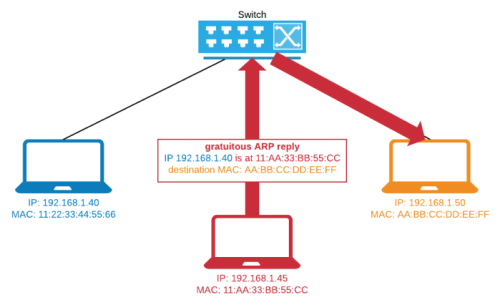
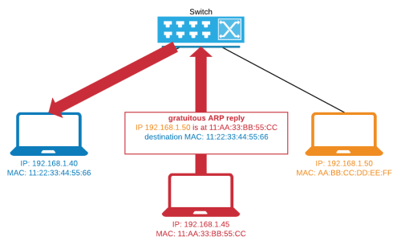

Host Poisoning
To do a ARP Host Poisoning attack the attacker forge
Gratuitous ARP replies and send them to both the communication peers.
Gratuitous ARP replies are unsolicited ARP reply messages.
In other words, the attacker sends a reply without waiting for a host to perform a request
After that the ARP cache table of the hosts is been modified
every packet between the poisoned hosts will be
sent to the attacker's machine. When the
attacker's machine receives the packets, it must forward them to the correct destination. Otherwise, the communication between the victim hosts will not work.
Not forwarding=0
Forwarding=1
Linux(attacker machine) head /proc/sys/net/ipv4/ip_forward #determine the value
echo 1 > /proc/sys/net/ipv4/ip_forward #change the value to 1
C:\> reg add "HKEY_LOCAL_MACHINE\SYSTEM\CurrentControlSet\Services\Tcpip\Parameters" /v IPEnableRouter /t REG_DWORD /d 1 /f
To know other ways to change registry value (example with meterpreter) see →
this chapter ←
An
attacker can also change the content of the packets exchanged by the two hosts.
To
prevent that a poisoned entry in the ARP cache table can
expire(TTL) we can set to send gratuitous ARP reply every 30 seconds or so.
Post Attack
This attack leaves the MAC address of the attacker in the ARP cache of the victims.
Use another gratuitous ARP with correct values would restore the correct values after the sniffing is completed.
Countermeasures
Using Static ARP is not a feasible approach into large and always changing networks.
Tools like arpwatch or arpcop can detect but not stop
such attacks.
{kind=link}
{kind=link}